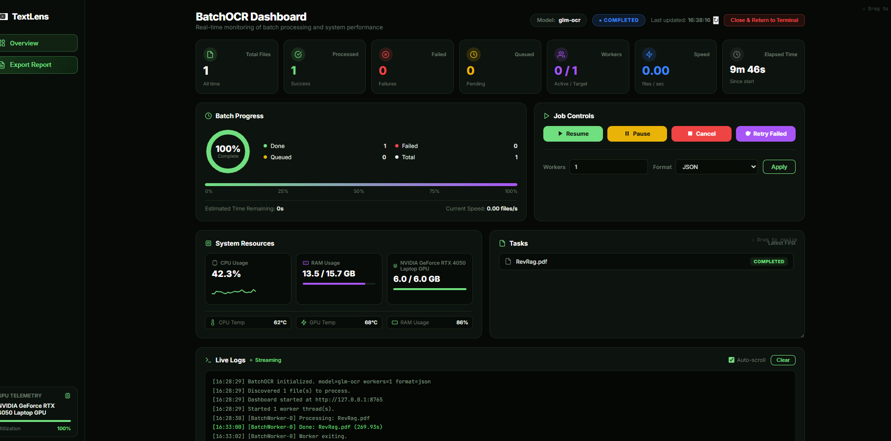

Selective PDF OCR
Each page is inspected first. Digital pages are read directly with exact text; only scanned, garbled or image-only pages are OCR'd — each with a reason code.
ocr="auto" | "force" | "off"Read text, tables and layout from images and PDFs with one line of Python. TextLens picks the right engine for your hardware — a laptop CPU, a Raspberry Pi or a GPU server — and only runs OCR on the pages that need it.
pip install textlens-ocr
from textlens import OCR result = OCR()("report.pdf") print(result.text) # plain text result.to_markdown() # headings, lists, tables result.save("output/") # .json .md .txt + tables as .csv
# only page 3 went through the OCR model for page in result.pages: print(page.number, page.provenance.source) 1 native 2 native 3 ocr 4 native
$ textlens ocr report.pdf -f markdown
# Quarterly Report ## Summary Revenue grew 12% year over year. Operating costs were flat. | Region | Q1 | Q2 | |---|---|---| | North | 120 | 135 | | South | 98 | 110 | Signed delivery note Received in good condition … report.pdf: 4 page(s) {'native': 3, 'ocr': 1} · confidence 0.998
$ textlens inspect report.pdf
Page Kind OCR Reasons Tables 1 native no - 2 native no - ✓ 3 scanned yes scanned 4 scanned yes invisible_text_layer mixed PDF (4 pages); 2 page(s) need OCR Pages needing OCR: 3-4 — everything else is extracted natively.
OCR()("file").textWhat's in 2.0
TextLens is the layer around OCR models: it reads documents, decides what needs OCR, picks a model for your hardware, and hands back one consistent result.
Each page is inspected first. Digital pages are read directly with exact text; only scanned, garbled or image-only pages are OCR'd — each with a reason code.
ocr="auto" | "force" | "off"Pages, blocks, lines, words, tables and formulas with bounding boxes, confidence and provenance — the same shape whichever model produced it.
text · markdown · html · json · csvProfiles like edge, fast and accurate choose a model that fits your RAM, VRAM and runtimes — with fallbacks when confidence is low.
The core install is Pillow, numpy, pypdfium2 and ONNX Runtime. No PyTorch, no OpenCV, no CUDA — it runs on a Raspberry Pi 4/5 and any laptop CPU.
pip install textlens-ocrSwap in document VLMs — GLM-OCR, LightOnOCR, HunyuanOCR — on a GPU, or any model served by vLLM through an OpenAI-compatible endpoint.
OCR(model="glm-ocr")Give a schema, get typed values back with the page and box each came from. Works locally with heuristics, or with a VLM when one is installed.
ocr.extract(file, schema=…)Section-aware chunks with page numbers and bounding boxes for citations, ready to drop into any vector store.
result.to_chunks()A FastAPI server with async jobs, API keys, rate limits and Prometheus metrics; a full CLI; and an MCP server so AI agents can read your documents.
textlens serve · textlens mcpAn optional ANPR pipeline: plate detection, recognition, plate formats for India, the UK, the EU, the US, Brazil and more, and tracking with voting for video.
textlens anpr car.jpg --region inHow it works
Most PDFs already contain their text. TextLens reads it directly — fast and exact — and sends only the pages that really are images to an OCR model.
Images, PDFs, DOCX, PPTX, bytes or URLs.
Classify each page: native, scanned, garbled, invisible OCR layer.
Pick a model that fits the page, the profile and your hardware.
Native extraction or OCR, with layout, tables and reading order.
One schema with boxes, confidence and where each page came from.
textlens inspect classifies every page in milliseconds.scanned, suspected_garbled_text and invisible_text_layer explain each decision.ocr.stream() at constant memory.textlens.load() — only touched pages are processed.from textlens import OCR ocr = OCR(profile="fast") report = ocr.inspect("report.pdf") print(report.summary()) # mixed PDF (4 pages); 2 page(s) need OCR for page in ocr.stream("report.pdf"): print(page.number, page.classification, page.provenance.source)
Quickstart
Python 3.10 or newer. The first run downloads the default model (about 31 MB, SHA-256 verified) into ~/.cache/textlens.
# the core: CPU OCR + PDFs, no PyTorch pip install textlens-ocr # optional extras pip install "textlens-ocr[gpu]" # document VLMs on NVIDIA GPUs pip install "textlens-ocr[server]" # REST API pip install "textlens-ocr[documents]" # Word and PowerPoint files pip install "textlens-ocr[all]" # everything except vLLM # check your setup textlens doctor
from textlens import OCR ocr = OCR() # or OCR(profile="edge"), OCR(model="glm-ocr") result = ocr("invoice.pdf") # images, PDFs, DOCX, PPTX, bytes, URLs print(result.text) print(result.to_markdown()) print(result.confidence, result.page_count) # tables for table in result.tables: print(table.to_csv()) # many files at once for r in ocr.batch(["a.pdf", "b.png", "c.jpg"]): print(r.text[:80])
textlens ocr invoice.pdf # print the text textlens ocr invoice.pdf -f markdown -o invoice.md textlens document report.pdf -o report.md # structure-first Markdown textlens inspect report.pdf # which pages need OCR, and why textlens extract invoice.pdf -s "invoice_number,date,total" textlens batch ./documents -o results/ # whole folders textlens models list # catalog + install status textlens setup # guided: detect hardware, pick a profile textlens doctor # diagnose runtimes and model fit
pip install "textlens-ocr[server]" TEXTLENS_API_KEYS=change-me textlens serve # http://127.0.0.1:8000/docs curl -H "X-API-Key: change-me" -F file=@scan.pdf localhost:8000/ocr curl -H "X-API-Key: change-me" -F file=@scan.pdf -F format=markdown localhost:8000/ocr curl -H "X-API-Key: change-me" -F file=@invoice.pdf \ -F 'schema={"total":"float","date":"date"}' localhost:8000/extract # large files: async job curl -H "X-API-Key: change-me" -F file=@big.pdf -F async=true localhost:8000/ocr curl -H "X-API-Key: change-me" localhost:8000/jobs/<job_id>
git clone https://github.com/Srevarshan05/textlens.git cd textlens # CPU image: server + PP-OCRv6 baked in, no PyTorch docker build -f deploy/docker/Dockerfile -t textlens . docker run -p 8000:8000 -e TEXTLENS_API_KEYS=change-me textlens # GPU and Jetson references: deploy/docker/Dockerfile.gpu, Dockerfile.jetson # Kubernetes: deploy/kubernetes/textlens.yaml
Models & profiles
Choose a profile and the router finds the best installed model that fits your hardware. Or name a model directly.
| Profile | Use it for |
|---|---|
auto | Default — decides from your hardware |
edge | Raspberry Pi, Jetson, low-memory devices |
fast | Low latency on any CPU |
balanced | Good accuracy without a big model |
accurate | The strongest model you have installed |
document | Layout, tables and formulas first |
server | Throughput on a shared GPU server |
from textlens import OCR OCR(profile="edge") # small devices OCR(profile="accurate") # best installed model OCR(model="glm-ocr") # a specific model # a model served by vLLM or any OpenAI-compatible API OCR(model="paddleocr-vl", endpoint="http://gpu-box:8000/v1")
| Model | Runs on | Good at | License | How |
|---|---|---|---|---|
| ppocrv6-small default | Any CPU, Pi, Jetson | Printed text, lines, boxes | Apache-2.0 | built in |
| glm-ocr | GPU ≥ 4 GB | Text, tables, formulas, Markdown | MIT | local |
| lighton-ocr | GPU ≥ 6 GB | Text, tables, formulas, Markdown | Apache-2.0 | local |
| hunyuan-ocr | GPU ≥ 6 GB | Layouts, charts, extraction | Tencent community | local |
| smolvlm | CPU or small GPU | Rough text | Apache-2.0 | local |
| paddleocr-vl | GPU server | 100+ languages, tables, charts | Apache-2.0 | served |
| deepseek-ocr-2 | GPU server ≥ 10 GB | Dense, long documents | Apache-2.0 | served |
local — textlens models install <name> downloads the weights. served — run the model in vLLM or SGLang and point TextLens at it. Always check a model's license before commercial use: textlens models info <name>.
Results
result = OCR()("invoice.png") for page in result.pages: for block in page.ordered_blocks(): print(block.type, block.bbox, block.confidence) for line in block.lines: print(" ", line.text) result.to_json() # the full schema result.save("output/")
schema = {
"vendor": "string",
"invoice_number": "string",
"date": "date",
"total": "float",
}
ext = OCR().extract("invoice.pdf", schema=schema)
print(ext.data) # {"vendor": ..., "invoice_number": ..., "total": ...}
print(ext.fields["total"]["page"]) # where it was found
result = OCR()("handbook.pdf") chunks = result.to_chunks(max_tokens=400, overlap_tokens=40) for c in chunks: store.add( text=c.text, metadata={"pages": c.pages, "section": " > ".join(c.section), "boxes": c.bboxes}, # for citations )
Deploy anywhere
Start on your laptop. Move to an edge device, a container or a GPU server without changing how you call it.
The default install. PP-OCRv6 on ONNX Runtime; PDFs with a text layer never touch a model.
pip install textlens-ocr textlens ocr scan.png
64-bit Pi OS, Jetson or industrial PCs. Works fully offline once the model is cached.
textlens setup --profile edge --yes TEXTLENS_OFFLINE=1 textlens ocr cam.jpg
Install a CUDA build of PyTorch, then the gpu extra. textlens doctor prints the exact command.
pip install "textlens-ocr[gpu]" textlens models install glm-ocr
API keys, rate limits, upload limits, async jobs, NDJSON streaming, /metrics for Prometheus.
pip install "textlens-ocr[server]" textlens serve --host 0.0.0.0 --workers 2
CPU image with the model baked in, plus GPU and Jetson references and a Kubernetes manifest.
docker build -f deploy/docker/Dockerfile \ -t textlens .
Let Claude and other MCP clients OCR, inspect and extract from files in a workspace you choose.
pip install "textlens-ocr[mcp]" textlens mcp --workspace .
Batch processing
textlens batch ./documents -o results/ shares one model across files, resumes where it stopped, and opens a live dashboard with CPU, RAM and GPU telemetry and a printable PDF report.

Walkthrough
A walkthrough of installing TextLens and running local OCR from Python and the command line.
Upgrading from 0.x
The 0.x API — OCR(model=…).read(), the read command and the /api/v1 endpoints — still works. New code should use OCR()(source), which returns the richer result.
pip install -U textlens-ocr # 0.x — still supported text = OCR(model="glm-ocr").read("scan.png") # 2.0 — recommended result = OCR()("scan.png") text = result.text
TextLens is MIT licensed. Star the repo, open an issue, or send a pull request — new backends plug in through a small, documented interface.